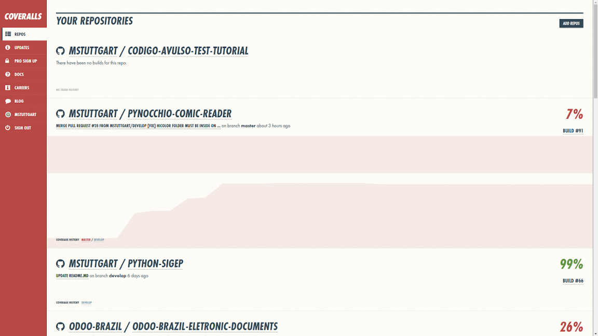
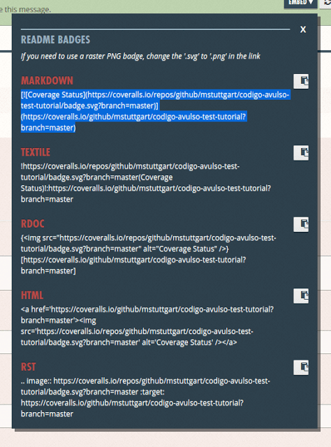
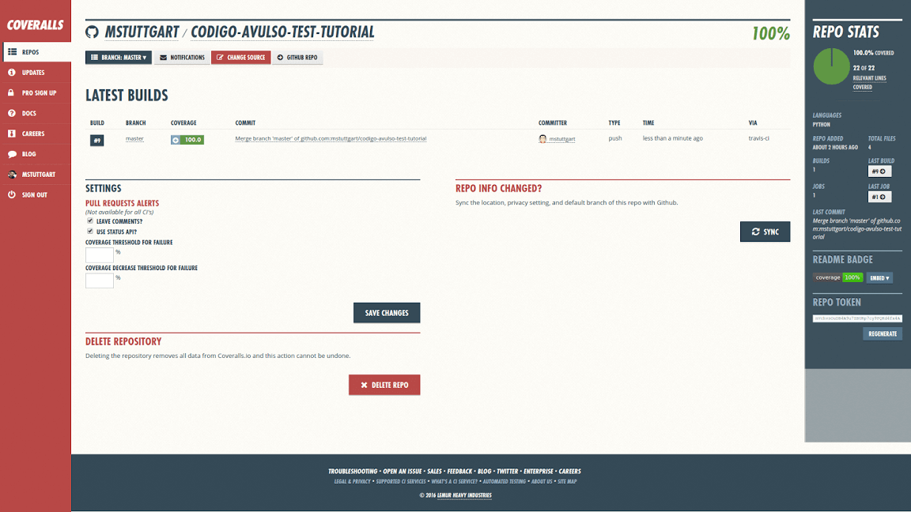

Fala pessoal, tudo bem?
Na segunda parte deste tutorial, aprendemos a usar o Travis CI para automatizar os testes do nosso projeto, facilitando a manutenção do código quando temos vários colaboradores. Nesta terceira parte, vamos configurar o serviço Coveralls para que o mesmo gere relatórios de teste sobre o nosso projeto. Os relatórios são muito úteis quando desejamos verificar o quanto do nosso projeto está coberto por testes, evitando assim que alguma feature importante fique de fora. Assim como o Travis CI, o Coveralls será executado após cada push ou pull request.
Diferente do tutorial anterior, serei breve sobre o processo de inscrição do Coveralls, focando mais no seu uso.
Criando uma conta
Antes de começarmos a usar o Coveralls precisamos criar uma conta no serviço. Isso pode ser feito aqui. O serviço é totalmente gratuíto para projetos opensource.
Após a inscrição, você será levado para uma nova página com uma listagem dos repositórios que você possui no Github.

Na imagem acima já podemos visualizar o projeto que estou usando neste tutorial: codigo-avulso-test-tutorial. Caso o seu repositório não esteja na lista, clique no botão ADD REPOS no canto superior direito da tela.
Ao clicar no botão, você será redirecionado a uma página onde é possível slecionar quais repositórios serão analisados pelo Coveralls. Caso o repositório desejado não esteja na lista, clique no botão RE-SYNC REPOS no canto superior direito. Ele vai realizar o escaneamento do seu perfil no Github e importar seus projetos.
Clique no botão escrito OFF ao lado esquerdo do nome do repositório. Isso ativará o serviço para este repositório.
Clique no botão DETAILS ao lado direito do nome do repositório e você será redirecionado para uma tela de configuração. Aqui o passo mais interessante é pegar a url da badgepara usarmos em nosso README.md.

Na área superior da tela, temos o seguinte:
Clique em EMBED e uma janelá de dialogo irá se abrir, selecione e copie o código em MARKDOWN.

Agora cole o código no cabeçalho do seu arquivo README, semelhante ao que fizemos com o Travis CI no tutorial anterior.
# Codigo Avulso Test Tutorial
[](https://travis-ci.org/mstuttgart/codigo-avulso-test-tutorial)
[](https://coveralls.io/github/mstuttgart/codigo-avulso-test-tutorial?branch=master)
Tutorial de Test em python para o blog [Código Avulso](http://codigoavulso.com.br/)
Concluída esta estapa, o próximo passo será adicionarmos o serviço em nosso projeto no Github.
Adicionando o Coveralls
Vamos adicionar o serviço durante o processo de teste do projeto. Assim, depois de cada push ou pull request, o Coveralls irá gerar o relatório sobre nossos testes.
Abra o arquivo .travis.yml em seu editor. Teremos o seguinte código:
language: python
python:
- "2.7"
sudo: required
script:
- run setup.py test
Agora vamos alterá-lo adicionando a funcionalidade do Coveralls. O códio atualizado do .travis.yml pode ser visto a seguir:
language: python
python:
- "2.7"
sudo: required
install:
- pip install coveralls
script:
- coverage run --source=codigo_avulso_test_tutorial setup.py test
after_success:
- coveralls
install: aqui adicionamos o comandopip install coveralls. A instalação docoverallsé necessaria para que possamos gerar os relatórios. Obs.: Você pode instalá-lo em sua máquina e gerar relátorios em html. Fica a sugestão de estudo.script: aqui substimuímos o comandorun setup.py testporcoverage run --source=codigo_avulso_test_tutorial setup.py test. Esse comando executa os mesmo testes de antes, mas já prove um relatório sobre a cobertura de testes do seu código.after_success: a última alteração foi adicionar a tagafter_success. Essa tag indica que após a execuação bem sucedida dos testes, deve-se iniciar o serviço de analise doCoveralls.
Assim que terminar de fazer essas alterações você já pode enviar o seu código para o Github. Assim que subir o código, o Travis CI irá iniciar o processo de teste. Finalizando os testes, o Coverallsserá iniciado. Se tudo ocorrer bem, a badge que adicionamos no aquivo README do projeto será atualizada exibindo a porcentagem do nosso código que está coberta por testes. Você pode clicar na badge ou ir até o seu perfil no site do Coveralls e verificar com mais detalhes as informações sobre seu projeto.

Na seção LATEST BUILDS clique no último build disponível que será possível verificar a porcentagem cobertura de teste para cada arquivo do seu projeto.
Caso tenha interessa, aqui está o link do repositorio que usei para esse tutorial: codigo-avulso-test-tutorial.
Conclusão
Aqui encerramos a terceira parte do nossa série de tutoriais sobre Unittest. O Coveralls ainda possui muitas configurações não mostradas aqui, então se você se interessar, fica a sugestão de estudo. No próximo tutorial veremos como utilizar o Landscape, um linter que analise nossos códigos atrás de problemas de sintaxe, formatação e possíveis erros de códigos (variáveis não declaradas, varíaveis com escopo incorreto e etc).
É isso pessoal. Obrigado por ler até aqui e até o próximo tutorial!